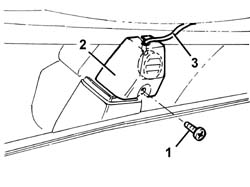

5570T14 mobile phone hands-free system microphone - r r
- Path
- Procedures > 55 ELECTRICAL EQUIPMENT > 5570 ACCESSORIES > 5570T car radio and car telephone > 5570T14 mobile phone hands-free system microphone - r r
- Kind
- repair procedure (removal / refitting; the operation number is the code)
- Applies to
- all engines; all production periods
- Interactive page
- https://sloeber94.github.io/elrnDB-a156/en/#/3238506
Applies to: all engines; all production periods
 Removing
Removing
 Refitting
Refitting7065C34 l/h or r/h sun blind (one) - r+r (left and right sides)
7040E40 modular front courtesy light - r r
7040H30 front pillar trim - r r (left and right sides)
7065C30 interior l/h or r/h grab handle (one) - r+r (passenger side)
7040A45 facia rh side cover - r r
7040G24 switch for facia compartment light - r+r
7040G20 facia compartment light bulb holder - r+r
1. Unscrew the bolt.
2. Lower the microphone mount.
3. Release the lead with microphone.

Applies to: all engines; all production periods
Lower the front edge of the roof lining.
Release the microphone lead from the bands under the front lining, on the right pillar and beneath the glove compartment.
Attach a sensor lead to the microphone lead connector in the radio compartment.
Recover the lead from the right pillar by pulling through the sensor lead to make it easier to refit the lead.
Applies to: all engines; all production periods
Refitting
RemovingCheck that the microphone and lead are undamaged.
Connect the electrical connection to the sensor lead fitted previously.
Replace the lead and secure with bands.
Position the microphone on the mount.
Fit the mounting and tighten the bolt.
7040G20 facia compartment light bulb holder - r+r
7040G24 switch for facia compartment light - r+r
7040A45 facia rh side cover - r r
7065C30 interior l/h or r/h grab handle (one) - r+r (passenger side)
7040H30 front pillar trim - r r (left and right sides)
7040E40 modular front courtesy light - r r
7065C34 l/h or r/h sun blind (one) - r+r (left and right sides)
Topics linked from this page (10)
- 5570T86 radio/phone set - r r
- 7040A31 flap assembly - r r
- 7040A45 facia rh side cover - r r
- 7040E40 modular front courtesy light - r r
- 7040G20 facia compartment light bulb holder - r+r
- 7040G24 switch for facia compartment light - r+r
- 7040H30 front pillar trim - r r
- 7065C30 interior l/h or r/h grab handle (one) - r+r
- 7065C34 l/h or r/h sun blind (one) - r+r
- 7065C42 ashtray (one) r+r